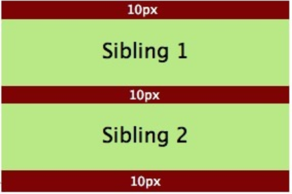
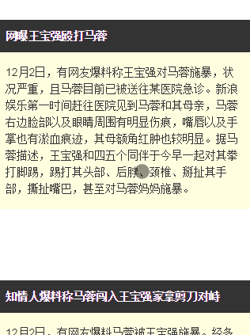

CSS注意点
BFC（块级格式上下文）
怎么创建BFC
- float属性不为none
- position为absolute或fixed
- display为inline-block、table-cell、table-caption、flex、inline-flex
- overflow不为visible
虽然添加上述的任意一条都能创建BFC，但会有一些副作用
- float: left 将把元素移至左侧，并被其他元素环绕
- display: table 可能引发响应性问题
- overflow: scroll 可能产生多余的滚动条
最常用是overflow为hidden，这种方式的副作用最小，其他三种方式的副作用较大
BFC中盒子怎么对齐
在BFC中，每一个盒子的左外边缘（margin-left）会触碰到容器的左边缘(border-left)（对于从右到左的格式来说，则触碰到右边缘）。浮动也是如此（尽管盒子里的行盒子 Line Box 可能由于浮动而变窄），除非盒子创建了一个新的BFC（在这种情况下盒子本身可能由于浮动而变窄）。
外边距折叠
常规流布局时，盒子都是垂直排列，两者之间的间距由各自的外边距所决定，但不是二者外边距之和。
<div class="container"> |
渲染结果图：

在上图中，一个红盒子（div）包含着两个兄弟元素（p），一个BFC已经创建了出来。
理论上，两个p元素之间的外边距应当是二者外边距之和（20px）但实际上却是10px，这是外边距折叠(Collapsing Margins)的结果。
在CSS当中，相邻的两个盒子（可能是兄弟关系也可能是祖先关系）的外边距可以结合成一个单独的外边距。这种合并外边距的方式被称为折叠，并且因而所结合成的外边距称为折叠外边距。折叠的结果按照如下规则计算：
- 两个相邻的外边距都是正数时，折叠结果是它们两者之间较大的值。
- 两个相邻的外边距都是负数时，折叠结果是两者绝对值的较大值。
- 两个外边距一正一负时，折叠结果是两者的相加的和。
产生折叠的必备条件：margin必须是邻接的!
sticky 粘性布局
position:sticky表现也符合这个粘性的表现。基本上，可以看出是 position:relative和 position:fixed的结合体——当元素在屏幕内，表现为 relative，就要滚出显示器屏幕的时候，表现为 fixed

正如大家看到，随着页面的滚动，当导航距离上边缘0距离的时候，黏在了上边缘，表现如同 position:fixed。
这就是 position:sticky最基本的表现，特别适合导航的跟随定位效果。
position:sticky
position:sticky有个非常重要的特性，那就是 sticky元素效果完全受制于父级元素们 。
这和 position:fixed定位有着根本性的不同，fixed元素直抵页面根元素，其他父元素对其left/top定位无法限制。
发现了sticky元素一些特性表现：
- 父级元素不能有任何
overflow:visible以外的overflow设置，否则没有粘滞效果。因为改变了滚动容器（即使没有出现滚动条）。因此，如果你的position:sticky无效，看看是不是某一个祖先元素设置了overflow:hidden，移除之即可。 - 父级元素设置和粘性定位元素等高的固定的
height高度值，或者高度计算值和粘性定位元素高度一样，也没有粘滞效果。 - 同一个父容器中的sticky元素，如果定位值相等，则会重叠；如果属于不同父元素，且这些父元素正好紧密相连，则会鸠占鹊巢，挤开原来的元素，形成依次占位的效果。
- sticky定位，不仅可以设置
top，基于滚动容器上边缘定位；还可以设置bottom，也就是相对底部粘滞。如果是水平滚动，也可以设置left和right值。
层次滚动实现原理
<article> |
article h4, |
由于每一段短新闻都在section标签中，属于不同的父元素，因此，滚动的时候，后面的新闻标题才能把前面已经sticky定位的新闻标题推开，这是sticky定位天然的特性，无需任何JavaScript的帮助。所以，position:sticky布局的时候，使用合适的HTML结构很重要。